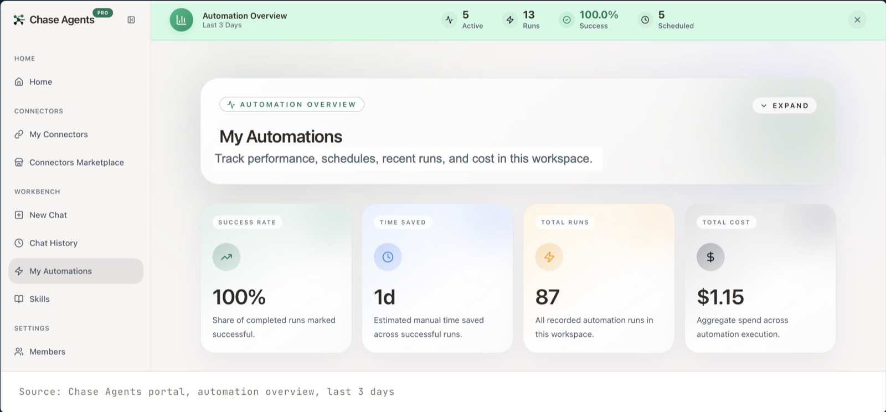
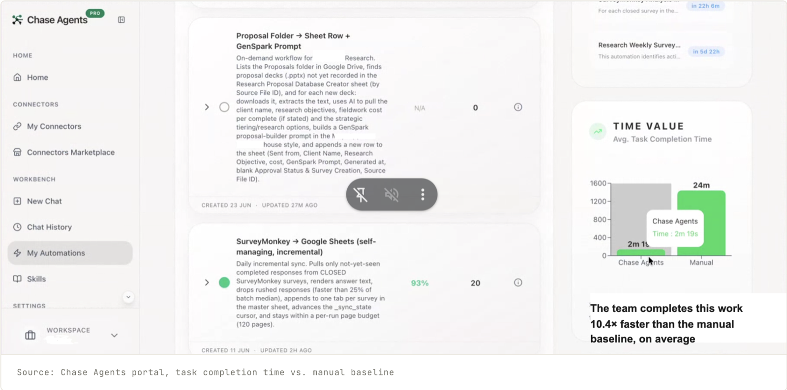

How a structured AI enablement programme scaled a data-intensive research practice: compressing a three-week delivery cycle to under an hour, removing dependencies on external resources, and returning an entire organisation's supporting teams to their core work.
The approach in this document: deterministic automation, knowledge architecture, and AI judgment, each applied where it belongs.
In eight weeks, Chase Continental transformed the operating model of a data-intensive market research business that serves banks, retailers, and insurers, and has over three million users on its platform. This transformation reduced a three-week delivery cycle to under an hour, increased operational capacity without additional headcount, and allowed specialist teams to return their focus to higher-value work. The engagement demonstrated four principles that organisations should consider when designing their own AI adoption strategy.
It has elevated the way I think. I can now focus entirely on what I was actually hired to do.

The client is a South African technology company operating a zero-rated digital platform available across all of the country's major mobile networks. Users can send messages and access content even when their data has run out, making its infrastructure one of the most accessible digital channels in the country. The platform serves a large, active user base spanning South Africa and the broader African market.
Within the business, research is a standalone practice conducting quantitative market research for corporate clients. Its primary asset is the company's own user base, which functions as a proprietary research panel. Surveys are deployed through the platform directly to panellists, and clients pay per completed response, making both response volume and response rate directly tied to revenue.
The research practice delivers strong, well-regarded work and drives real revenue. The next step was scale: every project cycle required significant manual effort and the involvement of multiple people across two departments: the natural ceiling to raise as the business kept growing.
| Area | Condition at engagement outset | Strategic implication |
|---|---|---|
| Data preparation | Survey responses collected on the client's platform and cleaned manually over two to three days per project | Senior research time was consumed by the lowest-value task in the cycle |
| Analysis production | Completed data passed to an internal data scientist, who returned analysis within a week; final compilation took a further day | A data scientist whose role was to model the company's user data was routinely redirected to internal research operations, and the core product absorbed the cost in delayed analytical work |
| Client presentations | Each presentation passed to an external graphic designer at R7,500–R10,000 per engagement, with a two-day turnaround | The highest-margin deliverable in the cycle generated avoidable external cost on every project and extended time to delivery |
| IT dependency | The research practice regularly required IT to support pipelines, troubleshoot field operations, and handle ad hoc requests | IT resources intended for the client's core product were consistently pulled into operational firefighting for one business unit |
| Research proposals | Scoped and priced manually by the research lead; no standardised structure or pricing logic; one to two days to produce | Only one senior role could produce a proposal, so every sales cycle waited on a single person's availability |
| Marketing | The research practice's marketing had not yet been built out | A unit generating high-quality research on the South African market had room to build more visibility and inbound pipeline from that output |
| AI literacy | Awareness of AI without a framework for evaluating where to apply it | Without a mental model distinguishing deterministic automation from AI-assisted judgment, any tool selection would rest on an unstable foundation |
Chase Continental's approach runs in three sequential phases: diagnostic framing, value mapping, and precision intervention. No tools are selected or built before the prior phase is complete. That sequence is where most AI implementations fail: tools are chosen before problems are understood, and the implementation ends up solving for the tool's capabilities rather than the organisation's actual needs.
If someone has to remember to ask it, the wrong thing has been automated. A prompt is work. A button is work. A question is work. Work introduces friction; friction introduces failure.
The alternative is that the operational environment itself becomes the prompt. The AI observes the state of the system it lives within, detects when a trigger condition is met, and acts, without waiting for instruction from a person. The field operations agent monitors the response database continuously and engages at-risk respondents when a threshold is crossed. The data pipeline runs when data arrives. The analysis begins when clean data is loaded.
This is the distinction between AI tooling and AI integration. A tool waits to be used. An integrated system acts without being asked. The human work is front-loaded: designing the trigger logic, building the knowledge base, defining what ready means. After that, the system runs. That is the design target every capability in this engagement was built to meet.
Before any workflow is touched, everyone involved needs the same clear picture of what AI can and cannot do. The output of this phase is not a document: it is the basis for every classification decision that follows. Without it, each subsequent choice, what to automate, what to hand to AI, what to leave with a person, rests on guesswork.
Every task in a knowledge workflow sits on a spectrum, from fully rule-based to fully judgment-dependent. Where a task sits determines how it gets built. The task's requirements come first; the capabilities of available tools come second.
Every workflow in the research practice was mapped end to end, from initial client brief through to billing, recording where data originates, where it moves, and what happens to it at each stage. Every opportunity went into a shared prioritisation document, ranked by impact and speed to build. The map finds intervention points with a precision no amount of tool knowledge can match, because it comes from understanding the work, not the toolset.
Mapping workflows for automation means writing the business down. For automation to run, information must be structured, accessible, and always in the same place. Where it is not yet (data in informal channels, knowledge that lives in one person's head, a process held together by memory) that is where the next layer of structure gets built. It is not a flaw; it is the natural artefact of a business that grew fast, and the technology simply makes it visible. Organisations routinely learn more about their own growth opportunities from an AI enablement engagement than from a conventional management diagnostic.
Each capability was built in a single focused session: scope confirmed from the prioritisation document, an MVP built and tested against live work already in progress, iterated until reliable, then scaled and left to run. The research practice was fielding real projects throughout the engagement, so every tool met real conditions immediately, with no simulated environment and no pilot detached from operational reality. When something worked, it went into production the same day.
Two decisions preceded every build: what the knowledge base must contain to support the workflow, and how the data moving through it should be structured and traced. These are not prerequisites that slow the work down: they are the reason the speed is possible. When the knowledge base is right, automation already has the context it needs the moment it runs.
In parallel, the team was trained to use Claude as a working environment. Claude Projects were structured so that context, client information, and institutional knowledge carry across every conversation instead of being rebuilt each session. Claude was integrated into the team's existing communication channels, assistance inside the workflows already in use, not another tab to switch to. The intent: leave behind a team that extends its own AI capability without external support.
Before any automation is built, the knowledge base is established: one structured repository holding the organisation's research taxonomy, client context, analytical standards, and output templates. Reusable AI skills, prompt structures that perform specific tasks the same way every time, live inside it. The effect: business context moves from individual heads into a system the organisation owns. If a person leaves, the work continues.
The research practice's work was mapped across eight stages, from initial client engagement through to billing. The map establishes where data originates, where it requires transformation, where judgment must be applied, and what each stage's output feeds into next.
A structured central data repository connects every stage of the critical path: clean survey data, billing records, client information, project metadata, and institutional knowledge all converge in one place. This is what makes the process coherent rather than a collection of disconnected tools, and what keeps the practice resilient when key people are unavailable.
Eight capabilities run across the critical path, each drawn from the value-mapping exercise and classified against the intervention framework. Claude serves as the core AI layer; Chase Agents orchestrates the workflows and calls Claude where AI judgment is required. The models inside Chase Agents are interchangeable, so the stack stays off any single provider and cost stays under active management.
| Capability | Type | Function | Stack |
|---|---|---|---|
| Data Processing Pipeline | Deterministic | Automates the full data preparation cycle using the ETL pattern (Extract, Transform, Load): the pipeline pulls responses from the client's platform, removes incomplete or invalid entries, structures them into a consistent format, and loads them to the central repository. This step previously took two to three days of manual work per project. | Chase Agents |
| Analysis Pack Builder | Hybrid | Processes the clean dataset against the project's pre-loaded knowledge base context to produce the Analysis Pack: a structured workbook of dozens of summary tables, cross-tabulations, trend breakdowns, and statistical outputs. Purpose-built per project: every sheet corresponds to a specific analytical dimension, and includes a pre-built prompt that feeds all data and insights directly into the presentation tool. Previously required an internal data scientist and up to a week to return. | Chase Agents |
| Report Writer | Hybrid | GenSpark takes the Analysis Pack's pre-built prompt and generates the full client presentation: narrative structure, data visualisations, executive summary, and supporting slides. The practitioner reviews and approves before delivery. This previously required an external graphic designer at R7,500–R10,000 per project with a two-day turnaround. That cost and that dependency no longer exist. | Chase Agents · GenSpark |
| Proposal Automation | Hybrid | Converts research briefs into structured client proposals covering scope, methodology, sample design, timeline, and pricing. Proposals that previously took one to two days to draft now take under 30 minutes. The tool calculates pricing automatically, removing manual calculation and its inconsistency. | Chase Agents |
| Survey Builder | Hybrid | Converts research objectives into structured questionnaire instruments. Claude drafts the question set against methodological standards stored in the knowledge base; Chase Agents formats and prepares the survey for practitioner review and approval before deployment. | Chase Agents · Claude |
| Field Operations | Deterministic | Deploys survey invitations and targeted follow-up messages to the client's panellist network through the platform on a fully automated schedule. The system monitors completion progress, identifies panellists at risk of not responding, and sends contextualised nudges throughout the field window to lift response rates. At 265,000+ sends per week, the core send logic is deterministic: reliability at this volume admits no variability. The initial MVP was built and validated against a live project in a single working session before being expanded into production. | Chase Agents · Client Platform |
| Marketing Engine | Net New | A marketing capability built from zero. Research outputs are packaged into market-facing content: LinkedIn thought-leadership pieces, executive summaries, and newsletters, produced automatically from completed Analysis Packs and client presentations. No marketing headcount was added. The unit now produces weekly external communications from intellectual output that previously went no further than the commissioning client. | Claude Design |
| AI Executive Assistant | AI-Assisted | A second brain inside Google Workspace. Incoming emails are labelled and prioritised automatically; due dates and commitments are tracked and surfaced before they slip; workflows are triggered directly from email content as it arrives. Meeting notes are captured and connected to calendar context so decisions and action items are never lost. The practitioner starts each day with a clear brief on what needs attention. | Google Workspace · Claude |
| Claude Workspace Setup | Foundation | Claude Projects configured across the team's workflows so that client context, research standards, and institutional knowledge carry across all conversations rather than being rebuilt each session. Claude integrated into existing communication channels. The team leaves the engagement capable of extending their own AI capability without external support. | Claude |
Every capability draws on the same knowledge base and calls the same reusable AI skills, so the toolkit behaves as one system, not eight tools. The stack is model-agnostic within Chase Agents: whatever AI landscape evolves, the automations keep running and the AI layer is redirected accordingly.
This engagement redesigned the operating model of the research practice. The proof is the cycle time: a deliverable that once required three people across two departments and the better part of three weeks now moves through a single structured system in under an hour, with one person orchestrating it. Before, someone cleaned the data by hand over two to three days. A data scientist then ran the analysis, returning results within a week. A senior researcher spent a day compiling the final analysis. An external graphic designer built the presentation at R7,500–R10,000 per project with a two-day turnaround. Proposals took one to two days to draft from scratch.
That same cycle now completes in under 30 minutes. Human review adds another 30 minutes. The total active time from clean data to a client-ready output, including the review step, is under an hour.
| Stage | Before | After |
|---|---|---|
| Data cleaning & preparation | 2–3 days (manual) | Automated (minutes) |
| Analysis production | Up to 1 week (data scientist) | Included in automated analysis (minutes) |
| Analysis review & finalisation | ~1 day | Practitioner review (30 min) |
| Client presentation | 2 days + R7,500–R10,000 (external designer) | Generated with analysis pack (included) |
| Research proposal | 1–2 days (manual) | Under 30 minutes |
| Full cycle: data to client-ready output | ~3 weeks | Under 1 hour |

The research revenue model is built on volume: clients pay per completed response, so response rate and completion rate move revenue directly. Before this engagement, field operations relied on a single initial send with limited follow-up capacity.
The field operations automation changed that entirely. It monitors the response database throughout the field window, identifies panellists at risk of not completing, and sends contextualised follow-ups through the client's platform: not broadcasts, but targeted outreach sequenced to each individual's behaviour. Completion rates lifted and stayed lifted, on every project through the stack. At 265,000+ sends per week with no manual involvement, this was the primary driver of the 18% revenue increase over two months.
The outcomes reached every team that had been pulled into supporting research. The client's core product, the zero-rated messaging platform used by millions of South Africans, was getting less attention than it needed, because the people responsible for building it were keeping research running instead.
When process work is absorbed by automation, capacity does not simply become available: it shifts. The tasks that previously consumed the senior role have been removed from it entirely. What remains is the work the role exists to do.
The engagement was scoped around time savings, and delivered them. Two outcomes were not anticipated. First, IT capacity returned: a team that expected to keep supporting research operations indefinitely stopped being needed there at all. Second, the mapping exercise surfaced organisational knowledge no one had ever written down: pricing logic, analytical standards, client context that lived only in individual heads. Codifying it was meant to enable automation. It turned out to be an asset in its own right.
It has elevated the way I think. I can now focus entirely on what I was actually hired to do, to engage with the data at a high level, think creatively about what it means, and find the insights. The process work takes care of itself.
“The time I used to spend on preparation and formatting is time I now spend on thinking. That shift changes the quality of the work — not incrementally, but fundamentally.”
The full automation stack runs at under $5 per month. Individual automations execute at fractions of a cent, some at $0.00004 per run. This is deliberate architecture, not luck. Deterministic processes run on Chase Agents without AI inference on every execution; AI is invoked only where judgment is required. The result: enterprise-grade automation at a cost that overturns the assumption that AI at operational scale is expensive. It is not, when the architecture is built correctly.
AI pricing, model quality, and vendor roadmaps continue to evolve, and most implementations are quietly locked to a single provider's decisions on all three. That dependency becomes a scaling risk the moment the landscape shifts. This engagement was architected so the client's research practice is insulated from it: provider, model, and price.
Because context, standards, and logic live in a structured knowledge base rather than inside any one tool, the organisation carries its institutional knowledge wherever it goes. Move to a different agent, adopt a different model, restructure the team: the accumulated intelligence of the practice moves with it, intact. The system is a portable asset the organisation owns, not a configuration rented from a provider.
The strategic payoff is straightforward. With the team insulated from provider risk, model risk, and price risk, leadership can plan around it rather than hedge against it. The attention that would otherwise go to managing tooling dependencies and absorbing price changes is freed to focus on the work that grows the business. A team that is resilient by design is one the organisation can build on with confidence, and that confidence lets a capable team reach further than the day-to-day previously allowed.
These learnings transfer to any knowledge-driven practice. They reflect what was observed, what was unexpected, and what any organisation considering similar work should carry into its planning.
AI implementation is often presented as a technology initiative. This engagement suggests the opposite: it is an organisational design exercise whose outputs happen to include automation. The software mattered. The models mattered. But neither produced the transformation. The transformation came from making organisational knowledge explicit, structuring it so systems could operate on it, and reserving human judgment for the work only people can do.